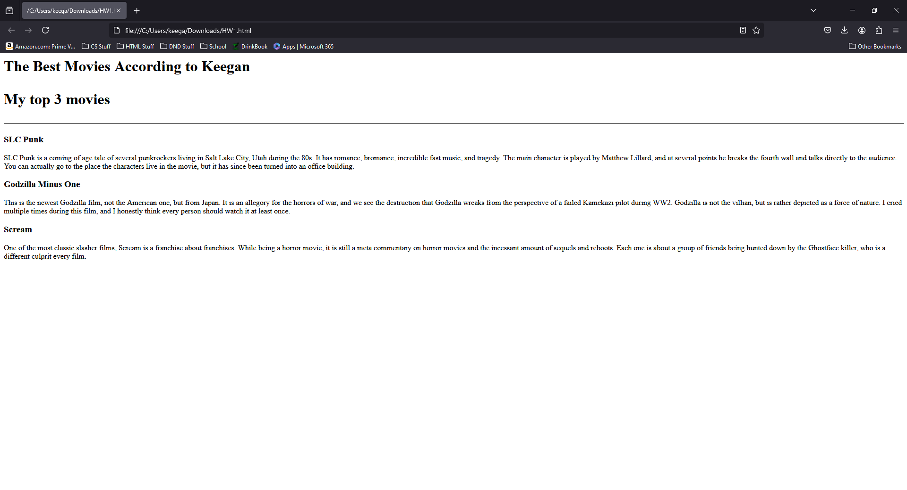
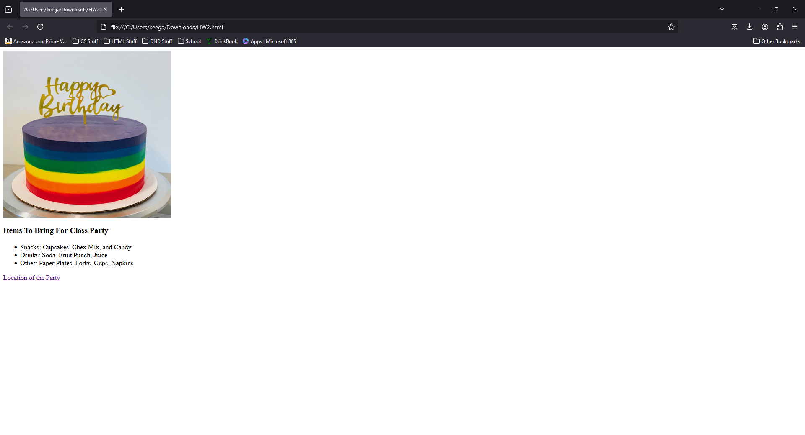
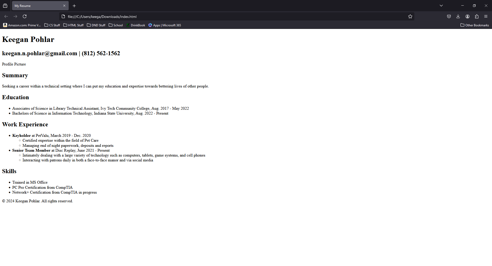
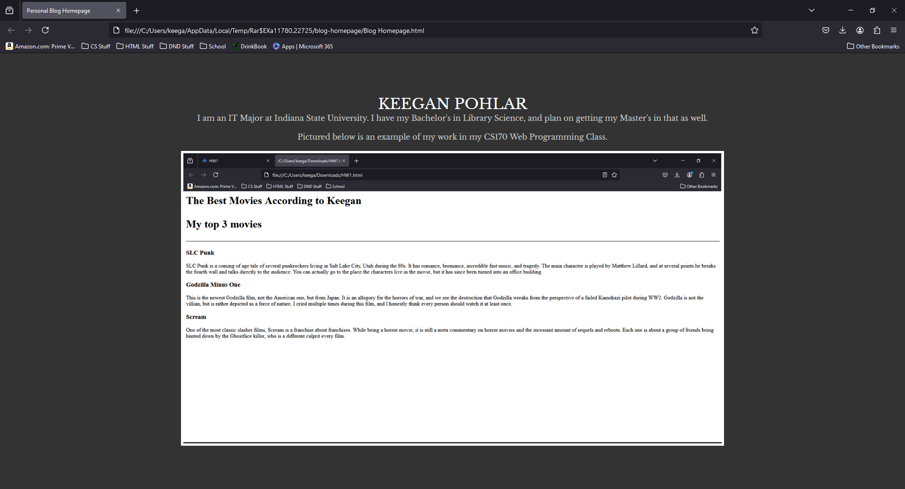
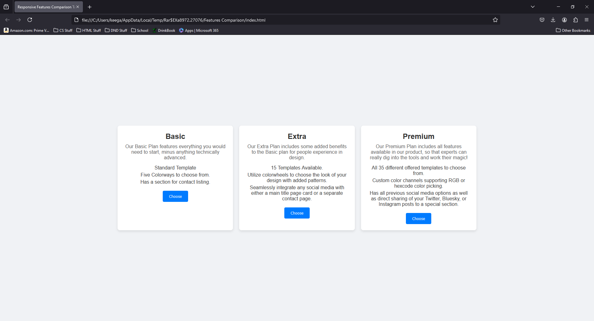

My Homework Projects
-
Project 1 was a list of my three favorite movies, as well as some details about them.
 -
Project 2 involved creating a list of items, the items within that, and embeding a link to Google Maps.
 -
Project 3 was the creation of an online resume, hosted on Github. This website is actually still active.
 -
Project 4 was a personal blog homepage, functioning as a precursor to this final Portfolio website. It features images of the previous assignments as well.
 -
Project 5 was a website designed to mimic a sales website for three levels of a specific service. It featured responsive elements such as the Basic, Extra, and Premium Tiles expanding when moused over.
